Reconnect with the map
Review the complete synthesis and how it evolved from the first brief.
ReviewAn evolving collaboration architecture connecting WGA, Amazonas Sagrada and Willkamayu while preserving the autonomy, priorities and mandate of each initiative and territory.

Felipe and Simona completed their catch-up on 3 August 2026. No further collective decision has been made. This version assembles the full research, visual work and open questions for correction by Simona and the wider team.
Review the complete synthesis and how it evolved from the first brief.
ReviewLook at WGA possibilities, the two territorial pathways, legal readiness and the ally map.
ExploreFlag inaccuracies, missing context, boundaries and assumptions that should not be carried forward.
CorrectDecide whether to shape a bounded 60–90 day Scoping & Readiness phase.
DecideThis integrated version preserves the original foundation while making visible what has emerged since the first conversation: more people, clearer technical possibilities, stronger territorial links and clearer decisions still needed.
The original vision, working thesis and careful evidence-first pathway remain valid.
The people involved, the technical possibilities, the two-territory opportunity and the possible mutual value.
Correct the synthesis, choose a first shared outcome and clarify participation, limits and feasibility.
The original sequence still works, but it refers mostly to territorial protection work. The collaboration itself is on a different path and needs its own clarity.
Now: synthesize what has emerged across the conversations—including the catch-up with Simona—then confirm the first shared outcome before defining commitments and action.
Measurement should happen once the group is clearer about what the evidence needs to help understand, protect, decide or unlock.
WGA, Amazonas Sagrada and Willkamayu remain distinct initiatives. Converging Waters is currently an exploratory collaboration layer — not an umbrella organization and not a merger.
Each project retains its own identity, priorities and freedom of action.
Shared work should create visible value for every participating project.
No role, resource, commitment or public association is assumed without confirmation.
Contributions, communities and territorial actors should receive fair recognition.
Collection, access, use and benefit should follow agreed consent and governance.
Some work may be shared; other work should remain project-specific.
The goal is not simply to collect data, but to connect question, evidence, shared understanding and practical action across two linked territories.
Willkamayu and Amazonas Sagrada can function as two distinct ecosystems for learning, piloting and comparison.
Two different ecosystems may help reveal what can be shared and what must remain locally specific.
Question → Evidence → Shared understanding → Decision → Protection or regeneration.
Stanley's contributions made WGA's possible role more concrete. Simona's review is now invited to correct the framing, availability and boundaries. These remain emerging possibilities, not confirmed commitments.
Portable eDNA and metagenomic observation across water, soil and other environmental samples.
Sensors, GPS, time, metadata, field nodes and traceable provenance around each observation.
Bioacoustics, a federated atlas and community participation with appropriate data stewardship.
 Portable field scienceSample → sequence → map → discover.
Portable field scienceSample → sequence → map → discover.
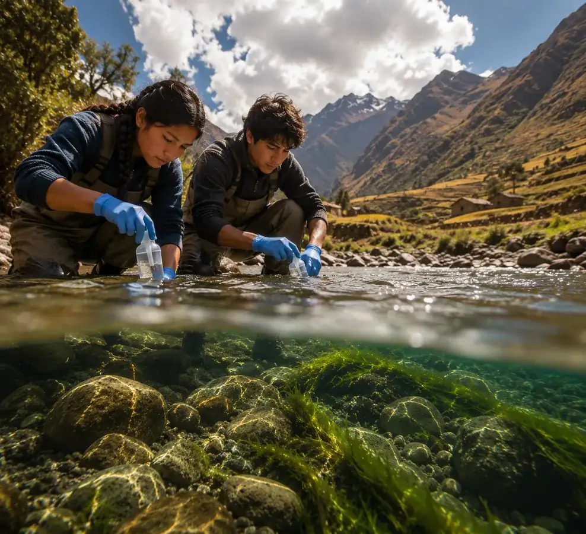
Sacred Valley possibilityPlace-based learning and river observation. A design principlePeople closest to a fragmented system should help build its infrastructure.
A design principlePeople closest to a fragmented system should help build its infrastructure.
A compact, visual checklist of the ideas, tools and reference examples Stanley has already shared, now with cleaner crops and click-through links on every card.
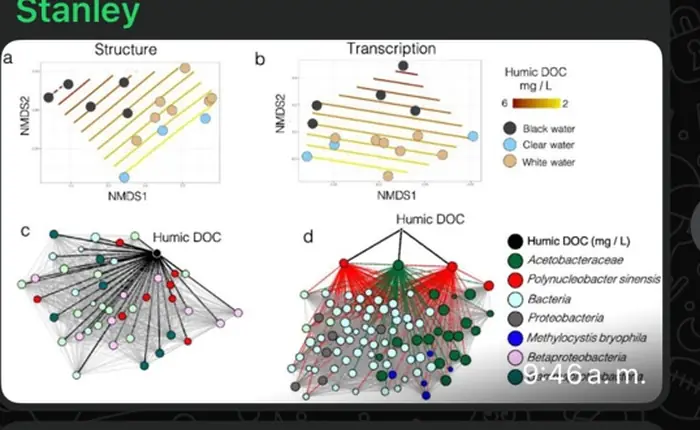
Data aggregation across ecosystem signals to understand relationships, shifts and changing conditions over time.
Open reference
Raspberry Pi or Jetson-style micro-computers integrated into low-footprint biomonitoring operations.
Open reference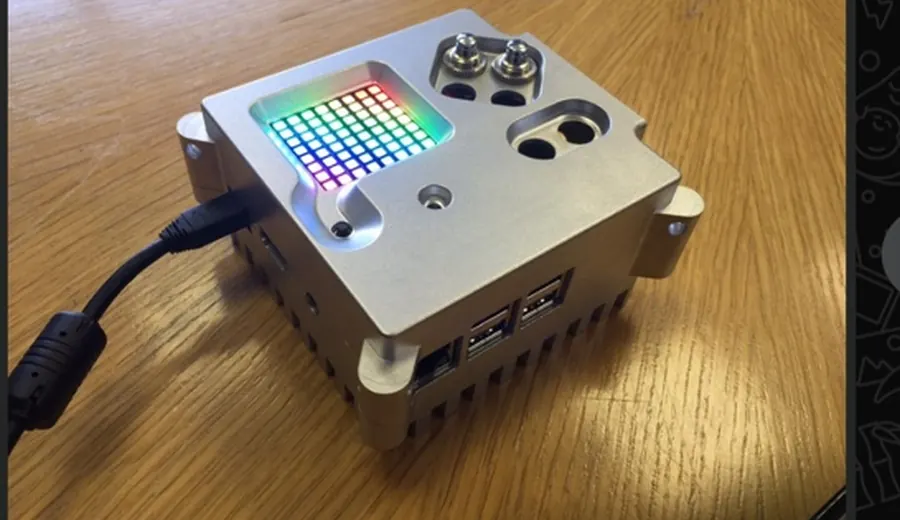
Compact hardware for collecting environmental metadata such as temperature, pressure, wind and water pH.
Open reference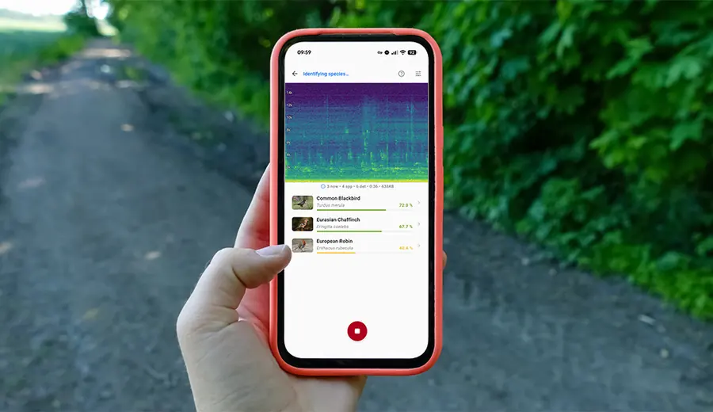
BirdNET and Merlin-style sound identification as proof that distributed community data can create powerful monitoring systems.
Open reference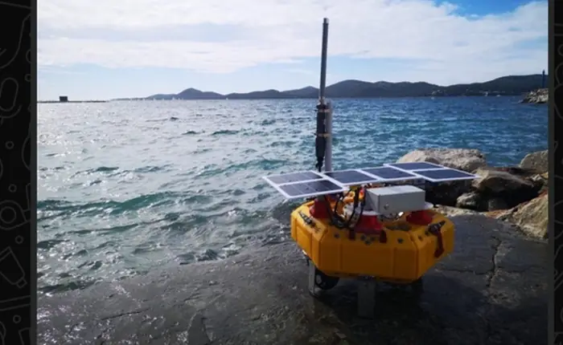
Raspberry Pi-powered marine robots as a concrete example of rugged, affordable sensing systems in real environments.
Open referenceWGA field imagery that helps the group visualize how sampling, portable equipment and local participation could come together.
Open referenceThese are the main public or semi-public links already referenced, now shown as visual cards so the group can open them directly from the page.
Best quick overview of WGA's current public positioning, capabilities and framing.
Open siteUseful for grounding the conversation in monitoring, data patterns and environmental observation logic.
Open siteA more field-facing narrative about learning, portable science and local participation.
Open site
A narrative reference for how Stanley frames lived experience, data and story in a compelling way.
Open siteThe purpose is not only to admire the possibilities, but to identify what is relevant, realistic and worth scoping first.
Equipment, technical support, costs, timing, field requirements, data governance and what is realistic for each territory.
The page moves from the existing collaboration thesis into purpose-led measurement, legal and organizational readiness, allies and next-stage workstreams.
Understand the three initiatives, the people and what must remain distinct.
FoundationConnect listening, baseline, MRV, remediation and adaptive learning.
EvidenceDesign mandate, legal strategy and the right operating structure before escalation.
ReadinessValidate potential allies and choose a careful 60–90 day path.
Next stageThe original internal brief has been preserved and extended incrementally.
Later visual work is preserved both as the original consolidated image and as native HTML/CSS for accessibility and future editing.
This version follows the catch-up with Simona and is intended to support continued review, not to imply collective approval.
The work can demonstrate need, feasibility and fundability.
Converging Waters can become a useful collaboration layer between three autonomous initiatives.
Willkamayu may develop into a guardian-led, evidence-based river-protection and regeneration pathway. Amazonas Sagrada may strengthen its own regenerative-enterprise, conservation, community and territorial priorities. WGA may contribute scientific infrastructure, citizen-science methods, data governance, storytelling and enabling partnerships.
The convergence becomes credible only if purpose, mandate, evidence, legal design, responsibilities and financing are developed before public escalation.
The 2025 JRVS process generated useful early framing.
It is currently paused.
A new legal vehicle can be designed when the ground is ready.
Felipe and María Gracia now explore independently.
A legal vehicle remains to be defined.
The cards below describe possible personal contribution areas based on knowledge, experience and demonstrated strengths. They do not assign fixed roles, availability, institutional resources or authority to commit an organization.
These are proposed contribution areas for reflection; no fixed roles are assumed.
Contribution areas remain provisional and should be corrected by each person.
Future guardians and communities must become structural participants, not peripheral beneficiaries.
Converging Waters should connect useful capacities without merging the initiatives or turning individual participation into institutional commitment.
WGA brings a reference landscape that includes portable sequencing, environmental field data, GPS-tagged observations, a federated atlas / data architecture and students or partners as data creators. What equipment, staff support or institutional capacity is actually available to Converging Waters remains for WGA to confirm.
Complementary Peruvian environmental and community learning contexts, field validation of scientific/data architecture and—if useful to WGA—a future scaling or financing case.
Amazonas Sagrada connects conservation with livelihoods, community benefit, community and Indigenous tourism infrastructure, production, water and sanitation R&D, products and traceability. Its territorial priorities and governance remain autonomous.
Biodiversity and water evidence, scientific support for conservation and traceability, stronger grant/visitor/investment narratives and selected shared technical or financing capacities.
Willkamayu is exploring an evidence-led river-protection pathway: baseline and monitoring, citizen participation, restoration, guardianship and legal-readiness, with mandate and coalition-building before any formal claim of representation.
Ecological and water baselines, citizen-science capacity, evidence for restoration and legal strategy, and a more credible fundable pathway for long-term river protection.
Amazonas Sagrada offers an important hypothesis: conservation becomes stronger when local livelihoods and community value become stronger too. Willkamayu can learn from that logic without importing the Amazonian model, and Amazonas Sagrada can selectively use shared science, monitoring or partnership capacity only where it serves its own territory.
Common learning infrastructure, compatible protocols where useful, evidence-based storytelling, selected joint funding opportunities and a collaboration method that can travel without erasing territorial autonomy.
Willkamayu currently has a more developed evidence and monitoring architecture inside Converging Waters. That reflects work already underway, not a claim that it is more important than Amazonas Sagrada.
Water quality, biodiversity, tributaries, sanitation pressures, riparian restoration and recovery can be understood as one connected river system.
Willkamayu — the sacred river — carries cultural and relational meaning that must be interpreted with legitimate local and Indigenous voices rather than claimed on their behalf.
Agriculture, tourism, water security, local livelihoods and restoration all depend on the health of the river and its tributaries.
Guardianship, Rights of Nature and other protection routes are possibilities to explore with legitimate territorial mandate and qualified Peruvian legal counsel — not predetermined outcomes.
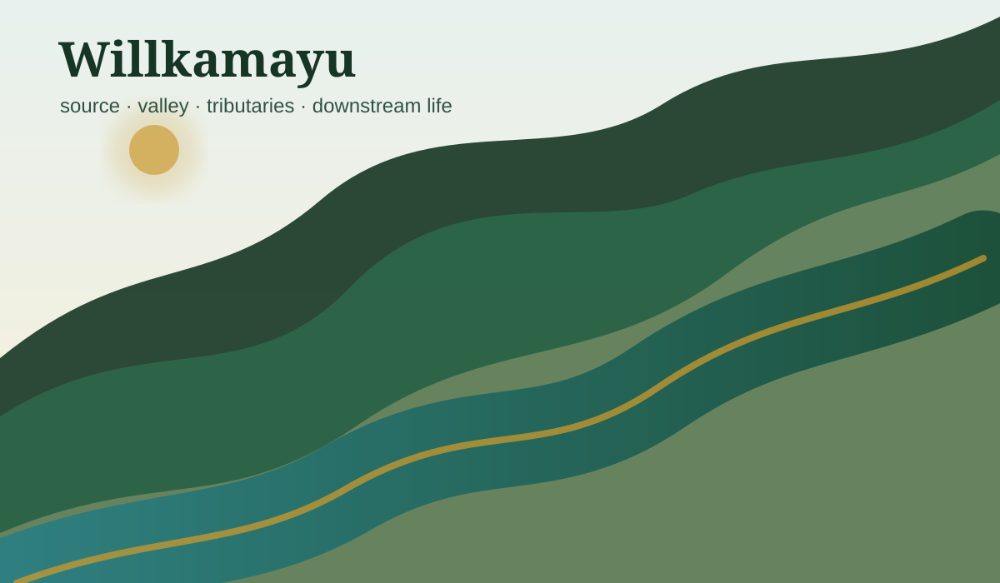
A light collaboration process and an equipment-agnostic citizen-science core can build useful learning without collapsing autonomy or overcommitting technology.
The hub shows why citizen science matters and how evidence connects to action. Protocols, QA/QC, school-network design, source trails and detailed findings belong in the specialist deep dive.
Shared purpose, a bounded 60–90 day result, realistic contributions, clear boundaries and an agreed review point.
Working circle, specific contributor, advisor/ally or informed participant. Silence is not consent and does not create commitment.
Deep preparation, light proposal, explicit consent, documented decisions and one accountable owner for every next action.
Advanced sequencing or sensing can be added where WGA and other technical partners confirm capacity, support and quality requirements.
Territorial knowledge, priorities, consent, legitimate representation and long-term stewardship.
Safe repeated observations, river literacy, participation and continuity.
Methods, quality control, independent validation, safeguards and legally useful evidence design.
Resources for learning, restoration and stewardship without turning participation into greenwashing or imposed agendas.
Portable sequencing, eDNA, environmental metadata and advanced field nodes are promising support layers, not prerequisites for every locality. Exact WGA equipment, training, maintenance and institutional support remain subject to WGA confirmation.
The Observatory will own environmental baseline, official evidence, citizen science, schools, MRV / QA-QC, monitoring logic, sanitation, biodiversity, preliminary findings and source provenance.
For teammates who do not live in the Sacred Valley, this section separates three different questions: what changes along the main river, what enters through tributaries, and what wider-basin pressures should be attributed separately.
Willkamayu is the Inka / Quechua name associated with the “sacred river.” Current institutional sources use Vilcanota and Urubamba for the same main river system across different stretches. This page therefore uses Willkamayu / Vilcanota–Urubamba when referring to the connected main stem as a whole.
Main-river checkpoints follow how the Willkamayu changes as it moves downstream. Tributary diagnostic nodes use a before + tributary + after pattern to identify what enters at important confluences. Wider-basin attribution looks beyond the first Sacred Valley corridor when a major source — such as Cusco through the Huatanay — may influence the river downstream.
What changes as the Willkamayu moves downstream.
What a tributary or local pressure appears to add at a specific junction.
What can influence the corridor from outside its first place-based program boundary.
Headwaters and upper-basin conditions flow toward Huambutío. Measuring the main stem before it receives the Huatanay provides an upstream reference.
Cusco is outside the first Sacred Valley benefit corridor, but its urban water footprint can still matter downstream. The Huatanay carries the signal from this urban system toward its confluence with the Willkamayu / Vilcanota at Huambutío.
Candidate attribution logic: M1 main stem before the Huatanay + M2 Huatanay immediately before the confluence + M3 main stem just below Huambutío. Together they can help distinguish upstream conditions from the contribution arriving through Cusco / Huatanay.
These are orientation nodes for a candidate monitoring spine, not a final station typology. At each locality, the hydrological audit should ask whether the best design is a main-stem checkpoint, a tributary/confluence module, both, or no dedicated station. The decision should follow the scientific question, tributary significance, pressures, existing official monitoring, access, safety, school participation and technical review.
Coya, Lamay, Huarán/Charán, Yanahuara, Pachar and Ollantaytambo belong to the same conceptual family: use before + tributary + after when attribution matters. Some geometries are simply better mapped today than others; none is final.
Current documentary evidence confirms that the Marhuay microcuenca drains toward the Vilcanota. Before assigning a fixed COY station pattern, map the lower tributary network and identify which confluence best answers the attribution question. Coya may ultimately use a main-stem point, a tributary module, both, or periodic sampling only.
The Río Carmen is a confirmed Lamay tributary that reaches the Vilcanota. The stronger working hypothesis is therefore before + Carmen + after, rather than treating Lamay as a purely longitudinal point. Exact sites, synchronization and instrumentation remain to be validated.
ANA documents an encounter of the Quebrada Charan Huaran with the Vilcanota in a water-use project associated with Huayoccari. That confirms the tributary connection but not that the best monitoring geometry is simply “at Huarán town.” Map the Huarán–Charán–Huayoccari relationship before fixing codes or sites, then apply the same attribution test used elsewhere.
YAN-0 main stem before Yanahuara · YAN-T Yanahuara tributary before confluence · YAN-1 main stem after mixing. Yanahuara is treated separately from Urubamba for monitoring design.
PACH-0 main stem before confluence · PACH-HAT Hatun Mayu before confluence · PACH-1 main stem after mixing. ANA already operates the PGIRH-067 Pachar hydrological station; its variables and data access should be checked before adding infrastructure.
OLL-0 main stem before the town · PAT-0 Patacancha before the urban area · PAT-1 Patacancha after crossing the town and before confluence · OLL-1 main stem just after Ollantaytambo and the confluence. This makes the post-town point an explicit outlet station for the first corridor.
The same hydrological/GIS check must also be applied to Pisac, Calca, Urubamba and every other orientation node. Absence from the six cards above does not mean “main-stem only”; it means no tributary module has yet been established strongly enough to show here.
A locality can contribute through one main-stem checkpoint, a before + tributary + after module, both, or a periodic campaign. Schools do not determine station count by themselves; they are matched to the hydrological question and safe access. The school network should later map district → populated center / microcuenca → schools → students → nearest monitoring question.
All monitoring-node types, codes, station counts and instrumentation shown here are working design hypotheses, not a final network. The architecture intentionally looks several steps ahead so the team can see what an ideal attribution system might require. WGA and other scientific/technical partners should review the monitoring questions, sampling geometry, synchronization, variables, QA/QC, eDNA/sensor fit and realistic equipment/support before any configuration is treated as final.
Measuring the Huatanay may be scientifically useful from the beginning even if the first place-based benefit and citizen-science corridor remains in the Sacred Valley. These are two separate decisions: measure the source versus activate a territorial program in Cusco. The latter can remain Phase 2 even if Huatanay attribution enters Phase 1.
The main stem continues downstream as the Urubamba. At Atalaya, the Urubamba meets the Tambo and forms the Ucayali; the Ucayali later meets the Marañón to form the Amazon, which reaches the Atlantic. This continuity explains why local river recovery can have wider downstream implications without implying that Converging Waters will monitor, govern or intervene across that entire system.
Cusco’s wastewater treatment system includes the PTAR San Jerónimo, which discharges treated effluent to the Huatanay. The Huatanay then joins the Willkamayu / Vilcanota at Huambutío. For Converging Waters, the key question is therefore not simply whether a treatment plant exists, but how much of the downstream signal is already present in the main stem and how much arrives through the Cusco–Huatanay branch.
The treatment system is also the subject of expansion and improvement planning. Because investment estimates and project status can change, dated figures remain in the evidence register rather than being presented here as timeless facts. This page keeps the stable research question while the evidence workstream tracks current capacity, performance, expansion and monitoring data.
SUNASS context · 2023 ProInversión baseline · validation backlog.
Research v02 turns several broad concerns into testable accountability questions. The hub keeps the strategic lesson; site-level evidence, methods and station logic remain in the River Observatory.
Huatanay / Kayra now includes a verified administrative record of unauthorized discharges and georeferenced observations. That supports before / source / after designs once current status and flow are rechecked.
Public sanitation and restoration investments create measurement opportunities, but budget or physical execution does not prove that infrastructure is operating or that the receiving river improved.
Where a baseline and comparable sites exist, Converging Waters can use before–after and comparison logic to ask whether a PTAR, restoration action, cleanup or other intervention produced an observable environmental change.
Sections 08–10 are related but not duplicates: one names what is still open, one defines the first readiness package, and one specifies what must be validated now. REV20 keeps each source section intact and adds only this orientation map.
The collaboration should distinguish enthusiasm from feasibility and turn the most important unknowns into explicit decisions, confirmations or follow-up questions.
Each person confirms their own expertise, interest, availability, boundaries and personal commitment. Organization-level priorities, resources, capacity and commitments must be confirmed at the organizational level by someone with the appropriate authority. Representation or affiliation alone does not make the two equivalent.
What exactly should the collaboration produce during the first 60–90 days, and what would count as a useful result?
What belongs to the Converging Waters collaboration layer, and what should remain entirely within Willkamayu, Amazonas Sagrada, WGA or another participating initiative?
What can WGA institutionally make available — equipment, staff time, technical support, training and data capabilities — and who is authorized to confirm or commit those resources? Simona's and Stanley's personal contributions remain a separate question.
What does each territory most need to understand, protect, regenerate or unlock first, and which questions should be answered before proposing field action?
Who participates, who decides, who can represent a territory or community, who accesses the data, how credit and provenance work, and who should benefit?
What is voluntary, professional or funded? What can each person realistically contribute, and what resources or support can each organization legitimately make available?
One jointly reviewed package can move the convergence from possibility toward informed action without forcing every territory or partner into the same level of readiness.
The purpose is not to announce a pilot prematurely. It is to make the next decisions better: what is ready, what still needs discovery, what support is real, and what should remain autonomous.
Willkamayu is already moving beyond generic scoping. The first package should convert the existing river-system, evidence and citizen-science work into a realistic readiness path.
Amazonas Sagrada does not need to be forced into the same maturity stage as Willkamayu. Its first outcome can be a clearer territorial learning agenda and opportunity map.
The WGA track should convert an exciting capability landscape into verified institutional feasibility for this collaboration.
Readiness does not mean that every question is closed or that a pilot has been approved. It means the group has enough verified information, territorial clarity, authority and resource visibility to choose a responsible next action — including the option to keep learning before acting.
The immediate ask is not a blanket commitment. It is a clean correction and validation pass so personal contributions, project priorities and organizational authority are not accidentally collapsed into one another.
What is inaccurate, missing or overstated about your knowledge, experience or possible contribution?
What should not be assumed about your role, time, resources or personal commitment?
What would make this collaboration genuinely useful to you and the work you care about?
Working circle, specific contributor, advisor / ally, or staying informed for now?
What is inaccurate, missing or overstated about the project or organization itself?
What does the initiative want to explore, and what must remain outside the collaboration or under its own governance?
What staff time, equipment, data, funding, technical support or other resources can actually be made available?
Who may confirm commitments, make decisions or represent the organization externally on each relevant matter?
A person may contribute both personally and as a representative of a project or organization, but the two answers should remain explicit. If institutional authority is not confirmed, the organizational item stays open rather than being inferred from the person's participation. The same rule applies to WGA, Amazonas Sagrada, Willkamayu and any future partner.
Corrections update the working map. Personal preferences update the participation layer. Institutional confirmations update feasibility and authority. Unconfirmed items remain visible as open questions. Only explicit decisions become commitments.
The strategic thesis is already strong enough to investigate: healthier living waters can support recreation, nature tourism, livelihoods, responsibility mechanisms and broader territorial value. The valuation itself is still an active research stream.
A 2015 Huatanay contingent-valuation study offers a local welfare-value reference of S/ 5 per household per month and S/ 5.4 million/year aggregate improvement value at that time. Research v02 also verifies published comparable river-product prices of roughly USD 49–99.
Local employment and retention, lodging and food spillovers, sport fishing, birding and biodiversity tourism, health impacts, avoided cleanup or treatment costs, landscape effects, ecological functions, cultural meaning, and option / non-use values require separate evidence and attribution.
These three sections remain separate and intact. This map only clarifies the reading order: start from territorial priorities, test technical options against real problems and evidence, then match financing to what is actually ready.
Amazonas Sagrada remains autonomous. The useful question for Converging Waters is which parts of its regenerative-enterprise experience can strengthen conservation, livelihoods and evidence without importing a model that the territory has not chosen.
The working hypothesis is that conservation becomes more durable when community benefit, viable livelihoods and territorial stewardship reinforce one another. The specific mechanisms, beneficiaries, governance and evidence needs must be validated with Amazonas Sagrada and relevant territorial actors.
What does Amazonas Sagrada most want to understand, protect, regenerate or unlock first? Scientific or technical support follows those priorities rather than defining them.
Explore where tourism, products, traceability, production or other revenue activities already create community value and whether they measurably reinforce conservation.
Identify where biodiversity, water, sanitation, provenance or impact evidence would improve decisions, credibility, learning or appropriate financing.
Clarify what remains entirely within Amazonas Sagrada, what requires community or Indigenous participation, and what — if anything — is useful to share through Converging Waters.
Chelsea’s experience may help test operational feasibility, production systems, brand discipline, visitor or product experience and how economic activity can support conservation. This is a possible personal contribution, not an institutional commitment by Amazonas Sagrada.
Willkamayu may learn from the principle of aligning ecological recovery with local value creation. Any river fund, tourism contribution, hotel participation, restoration sponsorship or accountability standard remains a Willkamayu hypothesis to test in its own social, ecological and legal context.
Chelsea confirms her own interests, availability and possible contribution. Amazonas Sagrada confirms project priorities, resources and commitments. Communities and Indigenous or territorial actors confirm what belongs to their rights, knowledge, representation and benefit-sharing.
Patrick’s experience can inform technical scoping. A pilot exists only after the relevant project or territory confirms the problem, site, permissions, resources and purpose.
Carry this forward only as a user-provided technical lead. Before any pilot claim: obtain specifications, mechanism, independent evidence, laboratory validation, regulatory fit, energy/cost data and comparison with established or nature-based alternatives.
Use spatial analysis to screen watersheds, headwaters, pressures, access, intervention sites and monitoring design before selecting field infrastructure.
Patrick may help scope or assess options personally. Amazonas Sagrada, Willkamayu, WGA or another organization must separately confirm whether it supports a pilot, contributes resources or accepts operational responsibility. WGA review may improve methods or instrumentation, but no WGA commitment is assumed.
The financing architecture should distinguish public-interest learning and stewardship from potentially investable activities. A funding story is not evidence that a project is ready for funding.
Only after demand, governance, economics, safeguards and impact evidence are credible.
Use measurable obligations, local-benefit rules and anti-greenwashing safeguards.
Joint fundraising makes sense only for genuinely shared costs or outcomes. Do not force Willkamayu and Amazonas Sagrada into one portfolio, one pilot stage or one financing instrument merely because they collaborate.
Simona may contribute MRV, partnership or green-finance framing personally if she confirms that role. WGA-level introductions, staff time, resources, financing capacity or institutional commitments require WGA confirmation by someone with appropriate authority.
Converging Waters already has warm conversations and credible access paths across local, scientific, cultural, restoration, education, tourism and conservation networks. The opportunity is real; formal roles and institutional commitments remain unconfirmed.
The matrix below is the authoritative relationship map. It distinguishes personal access, organizational status, timing and the next useful conversation. Detailed biographies remain in the people section; later citizen-science, guardian, tourism and legal sections own the deeper domain design.
Priority here is not prestige or long-term importance. It is which conversation can materially improve readiness now.
Improve listening, representation, intercultural process and the route into communities before participation or guardianship structures become too fixed.
Near-term path Centro Bartolomé de Las Casas (CBC) or an equivalent territorial/intercultural process partner.Complement WGA and citizen science with a Peruvian scientific/laboratory pathway for QA/QC, methods and independent analysis.
Near-term path Universidad Nacional de San Antonio Abad del Cusco (UNSAAC) + qualified laboratories.Use trusted relationships to share the work, learn and open doors. A warm introduction or personal relationship does not create a project role or an institutional commitment.
Near-term path Clarify mutual value first; deepen only where the fit becomes explicit.A shared welcome can let local people meet Simona and each other without turning the first days into a sequence of formal meetings.
One informal evening at Felipe's home, a restaurant or another comfortable local setting. The purpose is relationship-building and mutual orientation, not commitments or presentations of finished roles.
These can be in person or remote. The gathering does not replace specialist conversations; it reduces the need for every relationship to become a formal appointment.
Test participation, safeguarding, field practicality and how public-school access could work.
Test QA/QC, independent validation, methods, analytical capacity and collaboration fit.
Test territorial process, intercultural safeguards and representation before governance assumptions harden.
Learn from existing community-facing restoration practice and test complementarity.
One complete relationship table. Organizations may appear both within a personal path and as their own row because those two appearances answer different questions.
| Entity | Relationship / access now | Potential relevance | When | Next useful conversation | Depth layer |
|---|---|---|---|---|---|
| Current collaboration layer | |||||
| World Genome Academy |
CURRENT Existing collaboration through Stanley and Simona. |
Technical architecture, citizen science, environmental sequencing/data and partnership learning. | Now | Clarify institutional capacity, resources, authority, support and Peru-visit scope. |
Citizen Science
Science / Validation
Biodiversity
Alliances
|
| Amazonas Sagrada |
CURRENT Core autonomous initiative through Chelsea and Patrick. |
Regenerative enterprise, conservation, livelihoods, water/sanitation and territorial learning. | Now | Clarify priorities, boundaries, governance and the desired collaboration layer. |
Conservation
Governance
River Economy
|
| Willkamayu |
CURRENT Active river-protection and evidence pathway. |
Monitoring, citizen science, restoration, guardianship and legal readiness. | Now | Advance territorial participation, governance and pilot readiness without presuming mandate. |
Citizen Science
Restoration
Guardians
Legal
River Coordination
|
| Direct / warm personal paths | |||||
| Renzo Zeppilli Relevant affiliations / relationships: Natural Habitat Adventures — Expedition Leader; Inkaterra — documented historical bird-training / bird-identification work; Comité de Registros de Aves Peruanas (CRAP) — documented ornithological affiliation. |
WARM EXPLORATION New direct conversation and interest in learning more. |
Sustainable tourism, birding, biodiversity monitoring, environmental education and citizen science. | Soon / exploratory | Explore where his experience and current work could add value if the fit is mutual. |
Citizen Science
Biodiversity
Tourism
Education
|
| Pavel Marmanillo Relevant affiliations / relationships: Pachachaca — Director; Reforesta Calca — linked restoration initiative; Sumud Producciones — public reference still to locate. |
WARM PERSONAL PATH Direct relationship; already waiting to learn more. |
Restoration, local environmental networks, communication, local intelligence and alliance-building. | Now / pre-visit | Explore the contribution he actually wants to make and which relationships are useful to activate. |
Restoration
Alliances
Conservation
Storytelling
|
| Felipe García Rosell Relevant affiliations / relationships: Inroprin — educational consulting, equipment, technology and laboratory implementation. |
WARM PERSONAL PATH Part of Converging Waters has already been shared; strong interest has been reported. |
Education-sector relationships, educational laboratories, equipment and technical infrastructure, specialized implementation capacity, training and potential sponsorship pathways. | Now / pre-design | Explore his own interest and the specific areas where Inroprin could realistically add value, keeping personal participation and institutional participation separate. |
Education
Technical Infrastructure
Alliances
Finance
|
| Carlos Garavito Herrera Relevant affiliations / relationships: Residencia KAI — Founder & Director; Trienal Valle Sagrado 2026 — working-team relationship. |
WARM PERSONAL PATH Direct access; project not yet formally presented. |
Artist and curatorial networks, local awareness, international visibility, visual/audiovisual/sound storytelling and art–nature–territory engagement around the river. | Soon / possible gathering | Explore whether an artist-led awareness and cultural strand would create real value for the river work. |
Art
Culture
Storytelling
Alliances
|
| Paul Gambin Relevant affiliations / relationships: Maleza Casa Estudio — creator/co-director; National Geographic — Explorer/editorial relationship; The New York Times — published editorial work. |
WARM PERSONAL PATH Project mentioned; not formally presented. |
Visual storytelling, social/cultural interpretation and international editorial perspective. | Soon / possible gathering | Explore whether a concrete creative or storytelling contribution creates value. |
Culture
Storytelling
Art
|
| Alejandra Orosco Relevant affiliations / relationships: Maleza Casa Estudio — creator/co-director; Textile Exchange, Magnum Photos, VII Foundation and National Geographic — documented work/recognition relationships. |
WARM PERSONAL PATH Project mentioned; not formally presented. |
Photography, territory, identity, textiles, social gaze and cultural storytelling. | Soon / possible gathering | Explore whether a concrete creative or territorial-storytelling contribution creates value. |
Culture
Storytelling
Art
|
| Bruno Monteferri Relevant affiliations / relationships: Conservation International — current Lui-Walton Ocean and Fisheries Legal Fellow; SPDA — Sociedad Peruana de Derecho Ambiental — former Marine Governance Program leadership; Conservamos por Naturaleza — creator/former leadership. |
WARM PERSONAL PATH Potential soft introduction into Conservation International. |
Conservation law, strategy, partnerships and an institutional bridge. | Soon after / strategic | Explore whether and when a Conservation International conversation would be useful. |
Legal
Conservation
Alliances
|
| Carolina Butrich Relevant affiliations / relationships: SPDA — Sociedad Peruana de Derecho Ambiental; Conservamos por Naturaleza — current manager. |
WARM PERSONAL PATH Potential bridge into SPDA / Conservamos por Naturaleza. |
Conservation initiatives, alliances, citizen engagement and the legal/conservation ecosystem. | Soon after / strategic | Explore whether a future SPDA / Conservamos por Naturaleza conversation would be useful. |
Legal
Conservation
Alliances
|
| Walter Wust Relevant affiliations / relationships: National Geographic — documented nature-photography work. | EXPLORATORY | Nature photography, environmental communication and visibility. | Later / when useful | Explore whether his visual perspective could add value when the communications layer is more developed. |
Storytelling
Conservation
Art
|
| Joaquín Randall Relevant affiliations / relationships: Valle Sagrado Verde — warm relationship path; personal contribution and organizational authority remain separate. | WARM ACCESS | Restoration relationship and local ecosystem knowledge. | Soon / gathering candidate | Explore his personal interest and the appropriate organizational conversation separately. |
Restoration
Alliances
|
| Duilio Vellutino Relevant affiliations / relationships: Munaycha / Experiencia Munaycha — founder/owner; adventure travel, rafting, kayaking, SUP and river-protection awareness. |
DIRECT EXPERT PATH Conversation about the research direction has already begun. |
Adventure-tourism economics, river recreation, safety/operability and future expert review of the River Economy study. | Research now; expert review later | When the internal study is decision-ready, invite technical review of assumptions, constraints and scenarios. |
Tourism
River Economy
|
| Mónica Isola Relevant affiliations / relationships: ValleSagrado.pe — historical founder relationship; current role to revalidate; Valle Sagrado Regenerativo — historical founder relationship; current organizational status to revalidate. |
LATER PERSONAL PATH Existing relationship and prior Sacred Valley regenerative-network context; no role in Converging Waters is currently proposed. |
Regenerative-network knowledge, communications, tourism/education ecosystem and a possible later bounded contribution. | Later / when CW governance is more mature | Revisit when there is a specific, clearly bounded contribution that creates mutual value. |
Alliances
Governance
Tourism
Education
Culture
|
| Organizations and institutions | |||||
| Inroprin |
WARM ACCESS Personal pathway through Felipe García Rosell; institutional participation remains unconfirmed. |
Educational consulting and equipment, science and technology laboratories, implementation, training and maintenance; potential route into educational institutions, equipment integration and specialized technical support. | Exploratory / useful early | Determine whether there is real mutual value around school infrastructure, equipment, technical expertise, training or sponsorship — and what Inroprin would institutionally confirm. |
Education
Technical Infrastructure
Alliances
Finance
|
| Maleza Casa Estudio |
EXPLORATORY Warm access through Paul and Alejandra. |
Local cultural platform, photography, dialogue and community-facing storytelling. | Soon / optional gathering | Explore whether a concrete institutional collaboration makes sense. |
Culture
Storytelling
Art
|
| Green Heroes Peru |
HIGH-VALUE EXPLORATORY No partnership assumed. |
Environmental education inside public schools; potential route into school networks and citizen-science learning. | Now / possible gathering | Identify the right contact and test fit with the school/citizen-science design. |
Education
Citizen Science
Alliances
|
| Conservation International — Peru |
WARM INTRO PATH Possible introduction through Bruno; institutional interest unconfirmed. |
Large-scale conservation, community livelihoods, partnerships and financing. | Later / strategic | Identify the right team and the right moment for a substantive introduction. |
Conservation
Alliances
Finance
|
| SPDA Sociedad Peruana de Derecho Ambiental Related initiative: Conservamos por Naturaleza |
WARM INTRO PATH Direct path through Carolina; institutional support unconfirmed. |
Environmental law, conservation strategy, public policy, campaigns and alliances. | Soon after / legal-readiness | Explore scope, fit and timing with the appropriate team. |
Legal
Conservation
Public Policy
Alliances
|
| Centro Bartolomé de Las Casas (CBC) | STRATEGIC EXPLORATION | Territorial governance, intercultural processes, rights and community engagement. | Now | Identify the relevant program/team and test safeguards, scope and mutual value. |
Governance
Guardians
Alliances
|
| UNSAAC Universidad Nacional de San Antonio Abad del Cusco Relationship category: qualified laboratories / scientific-validation pathway | STRATEGIC EXPLORATION | Scientific validation, QA/QC, accredited analysis, students and peer review. | Now | Map faculty/lab champions, methods, accreditation, capacity and costs. |
Science / Validation
Education
Citizen Science
|
| Valle Sagrado Verde | WARM ACCESS | Restoration, reforestation, brigades and community-facing work. | Soon / possible gathering | Explore current organizational interest, capacity and complementarity. |
Restoration
Conservation
Alliances
|
| Residencia KAI |
WARM ACCESS Direct personal path through founder/director Carlos Garavito Herrera; no institutional role assumed. |
Art and research residency, artist networks, educational/creative projects, territory-facing cultural work and possible river-awareness collaborations. | Soon / exploratory | Explore whether a bounded art/awareness collaboration would serve the project and KAI's own interests. |
Art
Culture
Storytelling
Education
|
| ValleSagrado.pe |
LATER EXPLORATION Active regenerative-tourism platform; warm personal path exists through Mónica Isola. |
Regenerative tourism, local visibility, visitor economy, community impact and territorial storytelling. | Later / mechanism-driven | Explore complementarity once the tourism / River Economy layer has specific propositions to discuss. |
Tourism
River Economy
Storytelling
Alliances
|
| Valle Sagrado Regenerativo |
STATUS TO REVALIDATE Historical Sacred Valley regenerative-organization context; no current role assumed. |
Potential historical governance and regenerative-network learning if the organization remains relevant. | Later / after status check | Revalidate present organizational status, purpose and whether any future connection is useful. |
Governance
Alliances
|
| Riberas del Vilcanota / ACIRIWI Asociación Civil Riberas del Willkamayu |
LATER · COLLABORATION-FIRST Verified civil-society river initiative; an existing personal access path does not imply CW collaboration. |
First-party work includes riverbank/ecosystem recovery, environmental education, Corredor Verde and institutional articulation. Its stated corridor runs San Salvador → Ollantaytambo (~60 km), with a first Lamay–Calca–Huándar stage (~15 km). Calca has approved an interinstitutional cooperation agreement for a regenerative pilot / green corridor. | Later-stage coordination, once CW / Willkamayu has a clearer field scope. | Map complementarity against Riberas' verified active scope first; approach from a support / coordination posture and avoid duplicating existing work. |
River Coordination
Restoration
Education
Alliances
|
| Provincial Municipality of Canchis Canchis Province · upper Vilcanota headwaters in the Cusco Region | EXISTING PUBLIC LEGAL FOOTHOLD No CW relationship or mandate assumed. |
Existing 2026 municipal/provincial rights-of-river instruments; implementation, representation and territorial-reach questions remain under primary-source research. | Research now; engagement only when function is clear | Recover implementation architecture and identify the competent public counterparts before proposing any coordination. | LegalPublic PolicyGovernanceGuardians |
| CEPROSICentro de Promoción de Servicios Integrales | HISTORICAL PROCESS ACTOR Terre des Hommes identifies CEPROSI as its partner in the long Willkamayu educational/community process; no CW relationship assumed. |
Environmental education, community process, youth guardianship history and institutional memory around the Canchis milestone. | Research / collaboration mapping | Understand the process on its own terms before any outreach or role hypothesis. | EducationGuardiansCultureAlliances |
| Terre des Hommes | DOCUMENTED PROCESS / SOURCE Close secondary source to the Canchis process; no CW support or partnership inferred. |
History of the educational/community pathway, youth participation and implementation questions following the 2026 milestone. | Research first | Use for process history and actor mapping; verify legal propositions against primary municipal instruments. | EducationGuardiansAlliances |
| Flora Tristán + allied women-led networksGrupo Impulsor Mujeres y Cambio Climático Perú · Espacio Feminista Internacional | REGIONAL ADVOCACY / EXPLORATORY Documented March-2026 Cusco advocacy and coordination setting; no CW relationship assumed. |
Women-led territorial advocacy, river/headwater protection, regional articulation and public-policy dialogue. | Later / if the territorial process creates a real fit | Understand existing agendas and avoid presenting advocacy visibility as project endorsement. | Public PolicyGovernanceAlliances |
| Earth Law Center | PROSPECTIVE | Rights of Nature, guardianship and comparative legal design. | Later / legal trigger | Approach when the legal pathway is sufficiently framed for a useful advisory conversation. |
Legal
Guardians
|
| Municipality of Calca |
PUBLIC IMPLEMENTATION ACTOR No CW partnership assumed. Calca AC 007-2026-CM-MPC already approves cooperation with Riberas de Willcamayu for a regenerative pilot / Corredor Verde. |
Public coordination, implementation interfaces, riverbank regeneration, civic cleanup and future policy / institutional pathways. | Function-triggered | Engage only around a defined public function, evidence need or coordination question; distinguish municipal authority from civil-society project roles. |
Public Policy
Governance
Restoration
River Coordination
|
| Tourism-sector ecosystem | |||||
| CARTUC Cámara Regional de Turismo de Cusco |
PROSPECTIVE No direct contact reported. |
Regional private-sector tourism representation and sector coordination. | After River Economy hypothesis has substance | Test whether river recovery connects to regional tourism priorities and identify the right entry point. |
Tourism
River Economy
Alliances
|
| AATC Asociación de Agencias de Turismo de Cusco | PROSPECTIVE | Travel agencies/operators, demand intelligence and product distribution. | Later / study validation | Test operator appetite, product feasibility and member interest. |
Tourism
River Economy
|
| AGOTUR Cusco Asociación de Guías Oficiales de Turismo del Cusco | PROSPECTIVE | Official guides, field knowledge, visitor experience and natural/cultural heritage. | Later / study validation | Seek guide perspective on safety, visitor experience and product viability. |
Tourism
River Economy
Culture
|
| APTAE Asociación Peruana de Turismo de Aventura, Ecoturismo y Turismo Especializado | HIGH-VALUE PROSPECTIVE | National adventure/ecotourism gremio with technical, safety and regulatory relevance. | Later / once study is credible | Seek technical feedback, market comparators and potential sector engagement. |
Tourism
River Economy
|
| Cámara Hotelera de Cusco | PROSPECTIVE | Hospitality demand, visitor spending, sustainable tourism and possible future river-responsibility mechanisms. | Later / mechanism-triggered | Test a credible hotel-sector value proposition only after measurable mechanisms exist. |
Tourism
River Economy
Finance
|
| Cámara de Comercio y Turismo de Ollantaytambo |
PROSPECTIVE Recognized in the Cusco regional tourism-governance ecosystem; Facebook is the current known public route, with no website assumed here. |
Destination-level business and tourism perspective at the downstream end of the first corridor. | Later / local economic validation | Confirm current organization/contact and identify relevant members. |
Tourism
River Economy
Alliances
|
| CATURVA Cámara de Turismo del Valle Sagrado |
STATUS TO REVALIDATE Listed in the regional tourism-governance ecosystem. The Facebook page is the current known public route; recent activity and current organizational status remain to revalidate. |
Potential Valley-wide tourism representation if currently active. | After status check | Revalidate current legal/operational status, leadership and official channel. |
Tourism
River Economy
Alliances
|
| Mandate-bearing and wider ecosystem | |||||
| I.E. 56003 / Glorioso 791 educational community | GUARDIAN HISTORY Municipal recognition in 2022 as “Guardianes del Río Willkamayu”; this is not evidence of formal legal representation. |
Youth/community stewardship history, environmental education and a real local precedent for river guardian language. | Through legitimate educational / territorial process | Clarify current institutional identity, safeguarding and whether any future participation is desired. | GuardiansEducationCitizen Science |
| Communities, water-user organizations + local authorities |
PROCESS-DEPENDENT Essential; no representation presumed. |
Territorial knowledge, legitimacy, mandate, stewardship and accountability. | Through legitimate process | Build the appropriate consent, representation, priority and benefit-sharing process. |
Guardians
Governance
Restoration
|
| Schools, youth monitors + universities | PROCESS-DEPENDENT | Education, participation, long-term river literacy and citizen-science continuity. | Now / phased | Advance permissions, safeguarding, training, QA and institutional pathways. |
Education
Citizen Science
Science / Validation
|
Research v02 confirms a real educational and community guardian trajectory around Willkamayu, while reinforcing an important boundary: calling someone a “guardian” does not by itself create legal powers to represent the river.
Communities, local institutions, educators and Indigenous or territorial voices should shape questions, priorities and benefit before any external actor claims to speak for the river.
Existing school and community guardian work is a real social asset and can connect observation, learning, care and intergenerational participation.
Standing, powers, duties, accountability and procedural legitimacy require an explicit legal architecture. Community guardianship and legal representation can reinforce one another without being conflated.
Canchis Province lies at the upper Vilcanota headwaters around La Raya, where the river begins its course through the Cusco Region. The river's Cusco journey begins upstream here — and, in our verified record so far, so does its legal recognition. The 2026 Canchis instruments are a meaningful legal foothold, but one provincial recognition does not automatically protect the whole Willkamayu / Vilcanota. The opportunity is to strengthen what already exists through competent institutions, implementation, evidence and — where justified — enforceable judicial or national mechanisms.
Acuerdo de Concejo N.° 020-2026-CM-MPC (26 Feb 2026) records preferential provincial interest in recognizing the Río Willcamayu / Vilcanota and tributaries as rights-holders and expressly mentions their own legal personality. Ordenanza Municipal N.° 001-2026-CM-MPC (published 7 Apr 2026) carries the same summarized recognition object.
The recognition located so far is provincial, so it does not automatically travel downstream with the river. It also operates inside a divided system of public competences: municipal, regional and national authorities control different parts of water, environment, sanitation, investment and territorial management. A future municipal council can also modify or repeal a municipal ordinance through another ordinance, while a court can review its constitutional or competence validity.
A regional ordinance does not simply override a municipal one. Peru's Constitutional Court treats these norms through the principle of competence, not a simple hierarchy. The practical question is therefore how to add lawful reach, continuity and enforceability without creating overlapping or vulnerable mandates.
The strongest working hypothesis is not to replace the Canchis achievement, but to reinforce it: implementation duties, evidence / MRV, citizen science, restoration accountability, cross-jurisdiction coordination, legally competent public action and careful guardian-design can make the recognition harder to ignore and more useful in practice. Where facts and standing justify it, judicial protection or national legislation could add another layer of enforceability or territorial reach.
Converging Waters can contribute where useful by connecting evidence, citizen participation, stewardship and institutional pathways without claiming public authority or replacing existing actors.
Keeping those roles distinct protects both the community practice and the legal clarity needed for any future formal representation.
Canchis Resolution of Mayor N.° 138-2022 recognized the Glorioso 791 educational community as “Guardianes del Río Willkamayu” for awareness, cleanup and care. Terre des Hommes also describes children and youth as guardians and spokespersons in the longer CEPROSI-linked process. This is meaningful stewardship history; it is not automatically a procedural legal office.
No recovered primary Canchis instrument currently establishes a named guardian ad litem, trustee, procedural representative or equivalent office for the Willkamayu. Appointment, powers, standing, duties and accountability must come from the complete legal / implementation record before such language is used.
Marañón matters here for one reason: it shows that a judicial route can add enforceable remedies, court-backed representation and an execution stage. The fuller case history belongs in the Precedents overview below and in the Rights of Nature deep dive, so it is not repeated here.
Municipal / provincial, regional, national / administrative and judicial action are legal-institutional options, not mandatory steps. Use one or more only where they add real reach, continuity or enforceability.
Could add: Local normative coverage, implementation duties, budget / program integration, coordination and territorial legitimacy.
Current control: Canchis Province is a verified upstream foothold with real legal rank inside municipal competence. Its council can later modify or repeal it by ordinance, so implementation and institutional embedding matter. Additional provinces are options to assess, not mandatory “ratifications”.
Could add: Cross-provincial coordination, regional policy and functions that genuinely belong to the regional level.
Current control: A regional ordinance does not automatically override municipal law. Titicaca is the cautionary comparator: Puno's 2025 rights ordinance is listed as vigente, while national ministries publicly dispute its competence and legal efficacy. That is a validity / competence conflict, not a missing central-government “ratification”.
Could add: Sectoral enforcement, basin / water governance, environment, sanitation, public investment and — if politically viable — national legislation at a broader scale.
Current control: Must be mapped authority-by-authority; a rights declaration does not replace sector competence. Titicaca also shows that national environmental-recovery law can coexist with a separate and contested rights-of-nature route.
Could add: Case-specific rights protection, enforceable orders and potentially a representation structure.
Current control: Marañón is a real comparator. Standing, facts, defendants, evidence and remedy must be independently established for Willkamayu.
The architecture is broader than legal recognition. Selected legal routes strengthen LAW; LAW then works alongside the other three pillars needed to make protection observable, legitimate and operational.
Use the institutional route or routes that add concrete legal value in the circumstances.
Citizen science + MRV to observe river conditions, interventions and compliance over time.
Community participation, guardians and river stewards so protection is socially rooted and carried by legitimate actors.
Restoration, sanitation, programs, budgets and accountable institutions that can actually act.
This is the system we are trying to build: legal protection selected for real added value, reinforced by evidence, legitimate participation and implementation capacity.
Because no declaration or institution resolves territorial reach, competence, evidence, legitimacy, implementation and enforcement at once. The architecture is not another authority; it connects complementary functions while each legal power remains with the actor that legitimately holds it.
The architecture above answers what a durable protection system needs. The roadmap below answers how we build it from today’s starting point. It is a working direction, not a claim that every route is already agreed or required.
Preserve and operationalize the existing Canchis Province recognition rather than starting over.
Use implementation evidence, citizen science + MRV, and transparent monitoring to see whether conditions and interventions actually improve.
Identify the competent institutions, operators, duties and accountability points along the full Willkamayu / Vilcanota river system.
Use municipal, regional, national / administrative or judicial routes only when they add reach, continuity or enforceability — not simply another declaration.
Connect legitimate community participation, guardians / stewards, restoration, sanitation and public accountability to the legal structure.
The hub owns the current protection architecture and roadmap. Case histories, operative instruments, competence analysis, representation models and source-by-source legal detail belong in the specialist legal surface.
Converging Waters should connect functions where useful, not absorb or rebrand work that already has owners and history.
Long-term education, ceremony, cleanup, youth guardianship and process memory behind the Canchis Province milestone.
Riverbank recovery, environmental education, Corredor Verde and a verified municipal cooperation pathway in the middle corridor.
Regional advocacy and articulation around contamination, headwaters and the Canchis Province precedent; no support for CW is inferred.
Links are included so every legal proposition can be traced and re-audited as the research stream matures.
Canchis is our starting point. Peru shows what is already possible inside the same institutional system; global cases expand the design vocabulary. Each precedent below is kept to one distinct lesson so this section does not repeat the strategy already defined above.
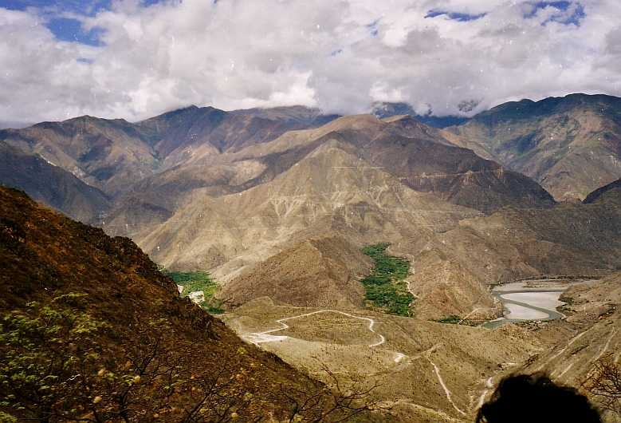
Gerd Breitenbach · CC BY-SA 3.0First and second instance recognition, followed by execution activity, make Marañón the strongest Peruvian judicial comparator in our current research.
Boundary: this is a case-specific Peruvian judicial comparator, not a nationwide rule or an automatic guardian template for Willkamayu.
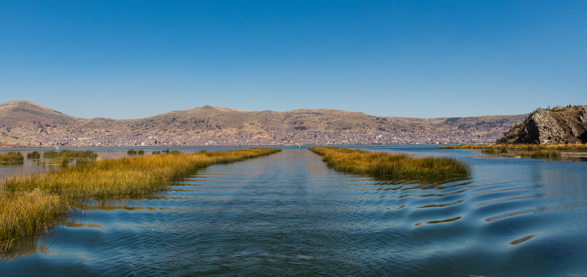
Diego Delso · CC BY-SA 4.0Puno's 2025 regional ordinance reaches beyond a single province, but national ministries publicly disputed the regional competence and legal efficacy of that route.
Boundary: the ordinance remains listed as vigente; the dispute is about competence and legal efficacy, not a missing central-government “ratification”.
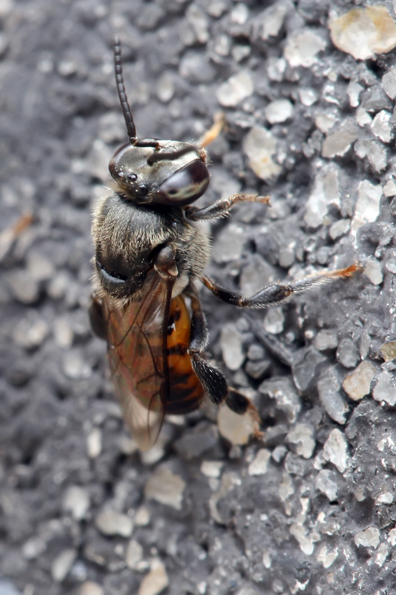
Muhammad Mahdi Karim · GFDL 1.2Satipo's 2025 ordinance links rights-of-nature language for stingless bees with conservation and their role in pollination.
Boundary: media visibility should never substitute for reading the operative text when assessing actual rights, duties or enforceability.
Whanganui and Atrato are especially useful because they add two ideas that the Peruvian cases above do not fully supply: whole-river governance and guardians + implementation.
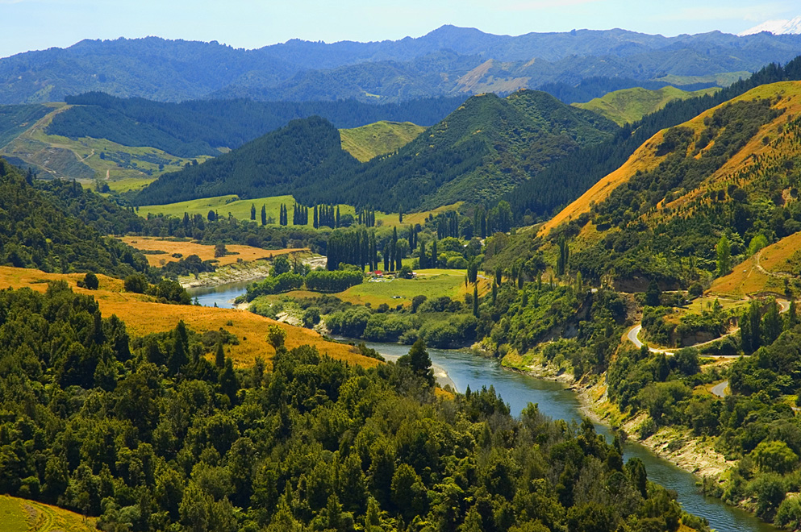
James Shook · CC BY 2.5The 2017 Act declares Te Awa Tupua a legal person and establishes Te Pou Tupua as part of a wider framework that also includes collaborative planning and a dedicated fund.
Do not transplant: this architecture emerges from the specific relationship, history and settlement between Whanganui Iwi and the Crown. The relevant lesson is structural design, not legal copy-paste.
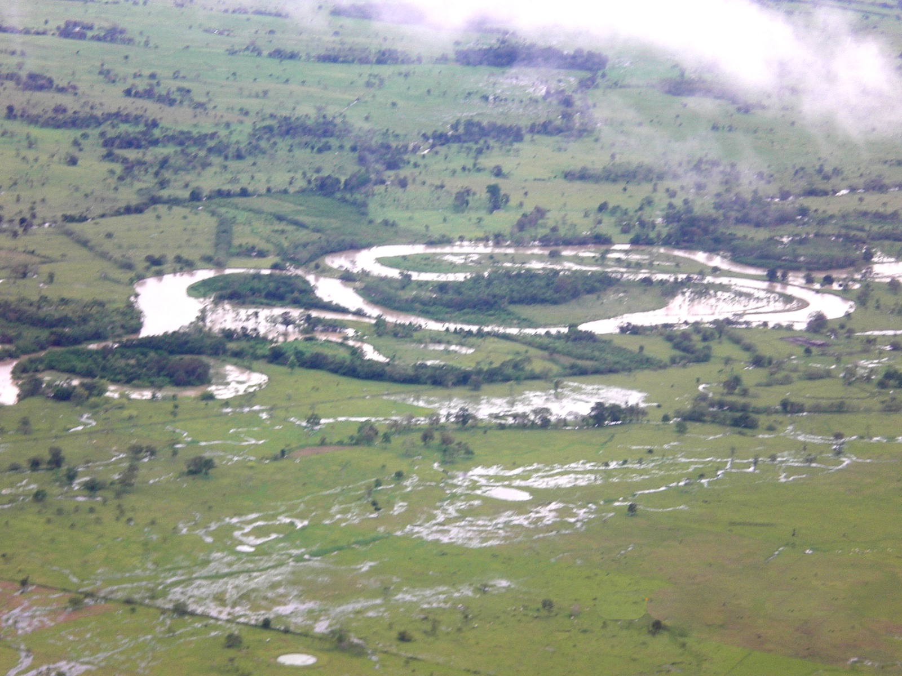
Nelammog · Public domainSentence T-622/16 recognized the Atrato, its basin and tributaries as a rights-bearing entity, paired State and ethnic-community representation, and ordered a guardian commission, remediation planning, indicators and institutional oversight.
Why it matters here: Atrato is the clearest global comparator in this set for connecting LAW with PEOPLE, EVIDENCE and IMPLEMENTATION — while remaining a Colombian constitutional case, not a Peruvian precedent.
This section does not redefine the strategy above. It supplies design inputs, not a checklist: use the precedent that answers the question in front of us, and keep every legal move tied to the territorial reality of Willkamayu.
The full chronology, legal instruments, capacity networks, source bank and open legal questions live in the Rights of Nature deep dive. That separation keeps the main hub readable without losing depth.
Peruvian cases operate inside the same national legal and institutional system as Willkamayu. Global precedents are most useful after that local frame is clear — as design references for specific questions, not as imported formulas.
Readers should not have to absorb every legal, scientific or economic detail in one scroll. Each deep dive has one authoritative domain and can evolve at its own pace.
Full Peruvian cases, global comparators, instruments, guardian / representation models, enforceability, competence and the evolving Willkamayu legal tracker.
Open Rights deep dive ↗Environmental baseline, official evidence, citizen science, schools, MRV / QA-QC, monitoring logic, sanitation, biodiversity and preliminary findings with explicit evidence status.
Open River Observatory ↗Adventure sports, nature tourism, livelihoods, restored-river scenarios, sector validation, contribution mechanisms and safeguards against weak attribution or greenwashing.
Open River Economy ↗The current strategy is modular: advance every front that has enough evidence, leave unresolved claims visibly open, and update the shared synthesis as stronger primary data arrives.
Use the existing river-observation architecture, institutional map, Canchis legal foothold and bounded collaboration process to improve questions, evidence and accountability without duplicating institutions.
ANA longitudinal trends, definitive school nodes, exact legal representation, institutional commitments, WGA equipment/configuration and a defensible annual River Economy valuation remain open until the required evidence arrives.
Continue research and validation in parallel, strengthen primary evidence, and keep the three deep dives as the authoritative homes for legal, observational and economic depth.